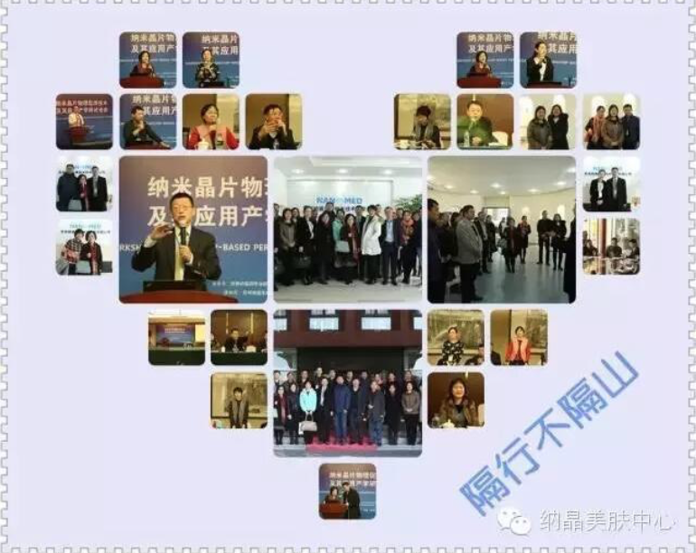
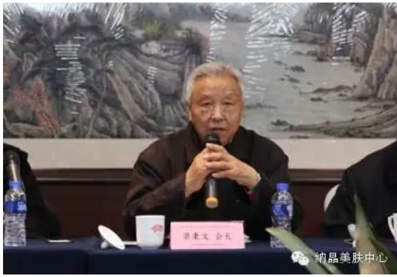
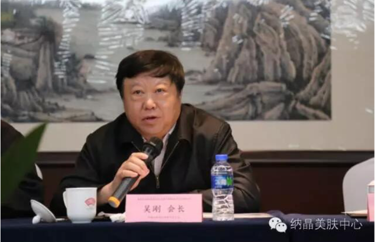
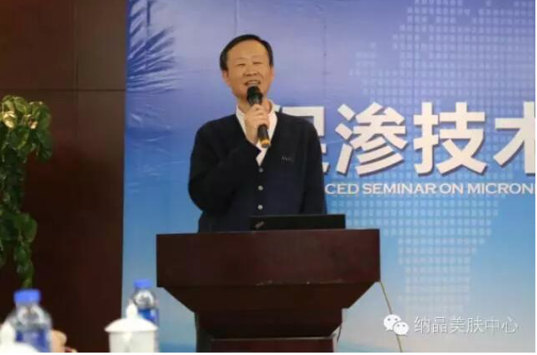
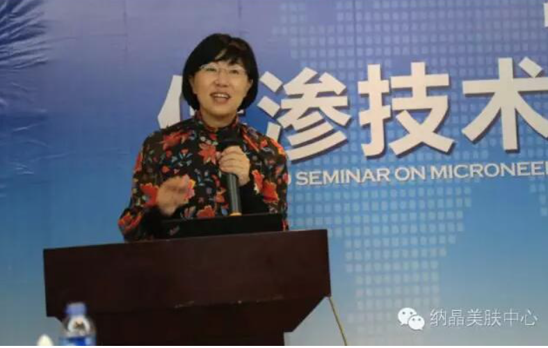
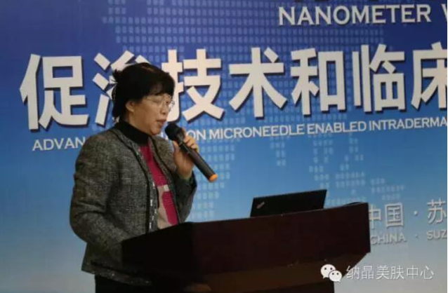

The Second Seminar about Accelerating Penetrating and Clinical Application of Nano-tech
The first seminar “Accelerating Penetrating and Application of Nano-tech” was launched by the World Traditional Chinese Medicine Committee and Transdermal Drug Delivery Committee in Suzhou, around with many representatives and experts from pharmacy, pharmacology and pharmaceutics science, in December, 2015.
Five clinical experts made their topic report of observations about the condition of accelerating penetrating physically and efficiency of nano-crystal chips. They offered many worthy suggestions for the clinical application and development of nano-crystal chips.
The Second Seminar was launched by the World Traditional Chinese Medicine Committee and Transdermal Drug Delivery Committee in Suzhou.

More than forty clinical experts from dermatology gave their views about the effect on accelerating penetrating of nano-crystal chips, and made discuss a lot. And they all felt very happy for this seminar.
Famous experts from dermatology in China

The president of the World Traditional Chinese Medicine committee and transdermal drug delivery committee--Bingwen Liang

The president of Information Research Institution of Chinese Traditional Chinese Medicine -- Gang Wu

Dean of General Hospital from the Air Force of Chinese People's Liberation Army from dermatology -- Wei Liu

the vice director of the First Hospital of Chinese Medical University from dermatology -- Yuanhong Li

the director of People’s Hospital of Jiangsu Province from dermatology -- Dan Luo